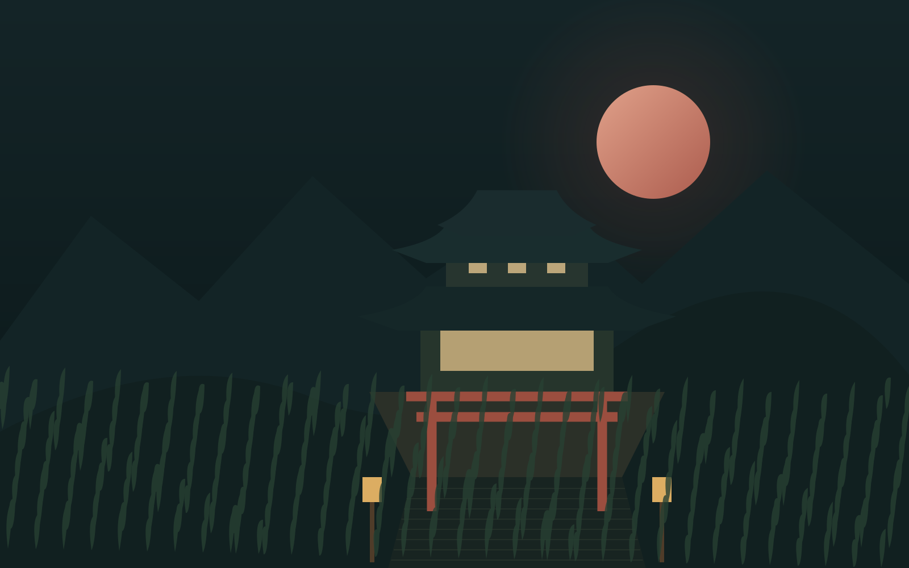

01 / THE NIGHT GARDENОб этом месте ↗
ДЫШИТЕ. ОСМОТРИТЕСЬ. ОСТАНЬТЕСЬ.
A PLACE BETWEEN MOMENTS
Побудьте
здесь.
Красная луна. Свет фонарей.
И несколько минут без спешки.
3D-сцена загрузится после нажатия.
夜 · NIGHTВОЗМОЖНОСТЬ ОСТАНОВИТЬСЯ
AN INTERACTIVE LANDSCAPE
Маленькое путешествие.
В собственном темпе.
Выберите ворота, сад или верхний храм. Двигайте указателем, чтобы слегка изменить взгляд. Уберите дождь, настройте свет или остановите движение.
Это художественная цифровая сцена. На телефонах по умолчанию отключены тяжёлые эффекты. Кнопка «Облегчённый запуск» также доступна на компьютере. Если 3D недоступно, остаётся графический пролог.